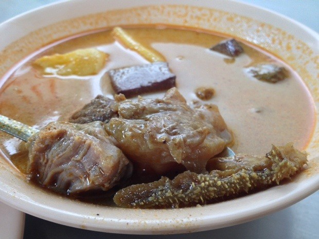

Perkembangan Wisata Kuliner di Kota Medan dan Sekitarnya
Brotherhood TIM
Nama kelompok
- Imran Permadi
- Muhammad Erfahd Yafizham
- Martin Erikson
- Windy Ardilla
Jenis Kuliner di kota Medan
Medan hadir dengan berbagai macam kuliner.
Aneka ragam kuliner dapat berupa seafood, mie, minuman, dan lain-lain
Kuliner di kota Medan yang paling digemari adalah Seafood Wajir.
Begitu juga dengan mienya yaitu mie aceh Titi Bobrok.
Berbagai kuliner minuman juga banyak digemari di kota Medan
Diantaranya jus terong belanda, Bandrek, Es Campur, dan lain-lain
Adapun kuliner jajanan makanan ringan yang paling mantap adalah risol GOGO. Risol GOGO dapat dijumpai di jalan Mojopahit.
Kuliner jajanan ringan bakpao muslim seperti kita ketahui biasanya yang namanya bakpao identik dengan makanan khas Tionghoa yang biasanya non-halal. Namun di kota Medan ada kuliner yang namanya bakpao muslim. Bakpao ini sama seperti bakpao biasanya. Tetapi bakpao muslim memiliki aneka rasa seperti ayam, coklat, keju, blueberry, strawberry dan kacang. Dan yang pastinya bakpao ini 100% halal. Untuk yang berminat mencoba kenikmatanya, silahkan datang ke kedai bakpao muslim.
Adapun wisata kuliner dengan berbagai macam kue dan roti.
Kue dan Roti yang ada pada wisata kuliner kota medan yaitu Di Pasar Bengkel. Dengan adanya sentra oleh-oleh pasar bengkel ini, secara langsung menambah pendapatan masyrakat sekitar maupun pendapatan daerah sekitar pasar bengkel. Serdang Bedagai merupakan kabupaten penghubung antar kota medan dengan provinsi yang berada di sebelah selatan sumatera utara dan
merupakan jalur utama ke kota medan, jadi pasar bengkel merupakan
tempat persinggahan yang banyak didatangi oleh orang yang dalam
perjalanan.

Kare dan Gulai juga merupakan ciri khas makanan di medan yang paling digemari
Kare kambing dan Gulai ikan Mas adalah masakan paling lezat di kota ini. Salah satu rumah makan paling lezat di kota Medan adalah rumah makan Tabona. Sebagai rumah makan yang menjadi legendaris menu kari di Medan, tidak mengherankan kalau pelanggan setianya selalu datang untuk bernostalgia menikmati kuliner hasil racikan homemade yang dibuat secara turun-temurun. Travelers, biar tidak penasaran, datang saja ke Jalan Mangkubumi no 17 Simpang Kol. Sugiono Medan. Harga menu kari cukup bervariasi, mulai dari Rp26.000 per porsi.